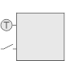
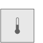
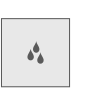
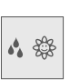
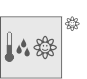

AQR25.. 属性
列出的属性显示在Hardware and network editor > Inspector window > Properties当在 KNX PL-Link 的设备在Device view选项卡。
AQR2570/2530 | AQR2570/2532 | AQR2570/2533 | AQR2570/2535 |
|
 |  |  |
|
|

AQR2576/2530 | AQR2576/2532 | AQR2576/2533 | AQR2576/2535 | AQR2576/2535Q |
|
|  |
|  |


General and Catalog information
常规和目录信息组提供有关设备的信息。
财产 | 描述 | 默认值 |
|---|---|---|
模式 | 模式显示设备的网络模式。只读。 | KNX PL-Link |
姓名 | 名称是用于输入设备名称的文本字段。该名称用于在设备视图中标识该设备。 | 取决于其他设置。 |
评论 | 注释是一个自由文本字段，用于输入有关设备的任何有用信息。 | - |
功耗 | 功耗显示设备消耗的电量。只读。 单位：[毫安] 该值用于计算 KNX 轨道的剩余电量。 另请参阅功耗和电源KNX rail of PXC3orKNX rail of DXR2. | 取决于设备类型。 |
简称 | 简短名称显示设备的简短描述。只读。 | 取决于设备类型。 |
订单号 | 订单号显示设备类型。只读。 | 取决于设备类型。 |
版本 | 版本显示设备的内部版本。只读。 | - |
描述 | 描述显示设备的简短描述。只读。 | 取决于设备类型。 |
Device information
设备信息组提供有关设备的信息以及对所有通道有效的设置。
财产 | 描述 | 默认值 |
|---|---|---|
设备地址 (KNX) | 设备地址 (KNX) 显示具有 KNX PL-Link 的设备的固定标准地址。只读。 | 255 |
使用的序列号 | 使用的序列号定义了设备识别的方法。
|
|
序列号 | 序列号定义用于设备识别的序列号。 仅当启用使用的序列号时，序列号才启用且相关。 | 000000000000 |
 ：在文本字段序列号中输入的序列号用于设备识别。
：在文本字段序列号中输入的序列号用于设备识别。 ：设备识别必须在Web界面中完成。设备必须处于 Web 界面编程模式才能执行设备识别。
：设备识别必须在Web界面中完成。设备必须处于 Web 界面编程模式才能执行设备识别。
Alarming
财产 | 描述 | 默认值 |
|---|---|---|
令人震惊 |
|
|
Functions
通道概述中的功能表提供了设备通道的概述。根据设备的不同，表中的值是只读的或可以编辑的。可用类型取决于设备和应用程序功能。
财产 | 描述 |
|---|---|
姓名 | 频道名称。只读。 |
类型 | 函数的名称。 |
区 | 设备地理地址的一部分。 范围：1...126 |
房间 | 设备地理地址的一部分。 范围：1...63 |
分区 | 设备地理地址的一部分。 范围：1...15 Note |
激活 | 激活定义通道是否被激活。
|
下表简要描述了这些功能。
类型 | 描述 | 使用通道数 |
|---|---|---|
GPDI | 通用数字输入 | 1 |
GPTS | 通用温度传感器。只读。 | 1 |
LDSB | 调光传感器基本 | 2 |
LSSB | 光开关传感器基本 | 2 |
SSSB | 遮阳帘传感器基本型 | 2 |
系统 | 映射到 BACnet 对象外围设备 (PrphDev) 的设备信息。只读。 | 1 |
一些功能是可以配置的。下面按这些函数在下拉列表中出现的顺序描述了这些函数的属性。
Relative humidity sensor
财产 | 描述 | 默认值 |
|---|---|---|
Hum rel COV 条件 | Hum rel COV 条件定义触发相对湿度值发送的相对湿度值的变化。 范围： | 5 |
嗡嗡的心跳 | Hum rel 心跳定义了报告相对湿度值（如果该值没有变化或变化小于 Hum rel COV 条件）的时间间隔。 范围 120…900 [秒] | 900 |
Hum rel 分钟重复时间 | Hum rel 最短重复时间定义发送下一个相对湿度值之前的最小时间间隔。 范围： | 10 |
 0...10 [%]
0...10 [%]Air quality sensor
财产 | 描述 | 默认值 |
|---|---|---|
AQ COV condition | AQ COV 条件定义触发发送室内空气质量值的室内空气质量值的变化。 范围：0...1000 [ppm] | 10 |
AQ heartbeat | AQ 心跳定义了在空气质量值没有变化或变化小于 AQ COV 条件时报告空气质量值的时间间隔。 范围：120…900 [秒] | 900 |
AQ min rep time | AQ 最小重复时间定义发送下一个室内空气质量值之前的最小时间间隔。 范围： | 10 |
高度 | 海拔定义了设备在海平面以上的位置。 范围：-200…3000 [米] | 0 |
Room temperature sensor (RTS)
财产 | 描述 | 默认值 |
|---|---|---|
值变化，COV | 值更改，COV 定义触发发送室温值的室温值的更改。 范围： | 0.1 |
心跳 | Heartbeat 定义了如果室温值没有变化或变化小于“Change of value, COV”时发送室温值的时间间隔。 范围： | 120 |
最小重复时间 | 最小重复时间定义了发送下一个室温值之前的最小时间间隔。 范围： | 10 |
Light switching sensor basic (LSSB)
财产 | 描述 | 默认值 |
|---|---|---|
LSSB mode | LSSB 模式定义用于打开和关闭的按钮数量： 可用选项的种类取决于设备类型。
| 取决于设备类型 |
按钮一/two上升沿 | 按钮 one/two 上升沿定义检测到上升沿时按钮的开关行为。
|
|
按钮一/two下降沿 | 按钮 one/two 下降沿定义检测到下降沿时按钮的开关行为。
|
|
NC 联系人类型 | NC 触点的类型定义数字输入是否连接到常开或常闭物理输入。
|
|
 2键模式
2键模式Light dimming sensor basic (LDSB)
财产 | 描述 | 默认值 |
|---|---|---|
LDSB mode | LDSB 模式定义是否使用 1 个或 2 个按钮进行开关或调光，并定义按钮的行为。 可用选项的种类取决于设备类型。
| 取决于设备类型。 |
长时间按键 | 长按键时间定义了按钮必须按下多长时间才能被检测为长按键。 范围： | 5 |
NC 联系人类型 | NC 触点的类型定义数字输入是否连接到常开或常闭物理输入。
|
|
在 2 按钮模式下反转调光方向 | 2 按钮模式下的反转调光方向定义如何将调高和调低分配给按钮。
|
|
Shutter and sunblind sensor basic (SSSB)
财产 | 描述 | 默认值 |
|---|---|---|
SSSB mode | SSSB 模式定义使用的按钮数量以及相关的移动行为： 可用选项的种类取决于设备类型。
| 取决于设备类型 |
NC 联系人类型 | NC 触点的类型定义数字输入是否连接到常开或常闭物理输入。
|
|
长时间按键 | 长按键时间定义了按钮必须按下多长时间才能被检测为长按键。 范围： | 5 |
极性反转 | 极性反转定义如何将向上移动和向下移动分配给按钮。
|
|
General purpose digital input (GPDI)
财产 | 描述 | 默认值 |
|---|---|---|
回电方式 | 电源返回模式定义了电源故障后电源恢复或应用程序重新启动时传感器的行为。
|
|
激活心跳 | 激活心跳定义是否定期发送过程值。
|
|
心跳 | Heartbeat 定义了报告过程值的时间间隔。 范围： | 15 |
General purpose temperature sensor (GPTS)
财产 | 描述 | 默认值 |
|---|---|---|
值变化，COV | 值变化 COV 定义触发温度值发送的温度值变化。 范围：0.1...100 [K] | 0.1 |
温度值心跳 | 温度值心跳定义了如果温度值没有变化或者变化小于Change of value COV，则报告温度值的时间间隔。 范围：120...900 [秒] | 120 |
温度值最小重复时间 | 温度值最小重复时间定义了发送下一个过程值之前的最小时间间隔。 范围： | 10 |